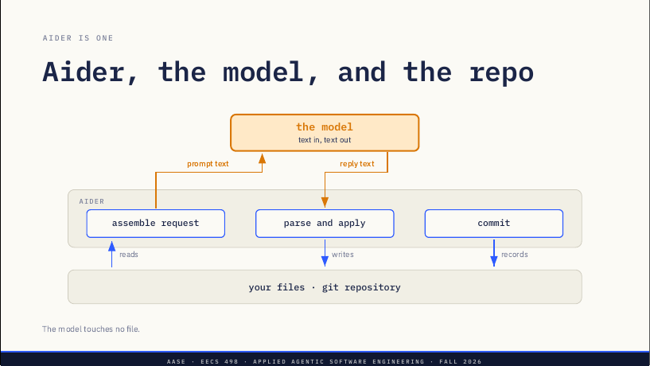
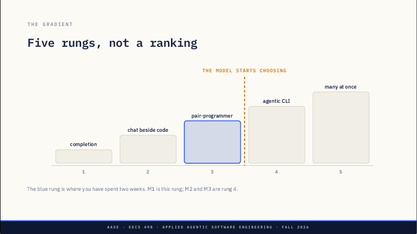
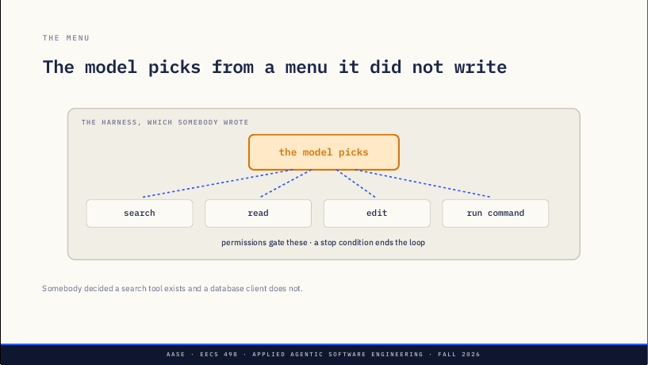

L05 · Modern agentic CLIs：工具越「自主」，变的只是谁来选下一步
Lab01 拆过 Aider 的提示词由谁决定。L05 把一次请求写成六步，指出模型只占其中一步；再用一条五级「自主梯度」和四个可检验的原语（loop、tools、planning、memory）说明：Aider 四样都有，真正的分界是「下一步由谁选」。最后用同一个 taskr 需求在讲台机器上演示高一级的工具，并指出 harness 仍然决定菜单、权限和停止条件。
课件 slides.md slides.pdf 本页导读约 25 分钟
讲者备注：两个实验班都已经上过 Lab01，不预告 Lab01、也不揭晓 build；这一讲概览 Lab01 打开的这一类工具。Claude Code 只在讲台这台机器上出现，在场的人都不需要账号，没有任何一页要求注册。
Lab01 留下的一个问题
原文 · Lab01 left one question openLab01 里，你按「每一部分由谁选」给提示词分了类：
| Part of the prompt | Chosen by |
|---|---|
| System prompt | Aider, by mode |
| Added and read-only files | You, by command |
| Repo map | Aider, by a ranking |
| History | You start it, Aider trims it |
| Your message | You |
有两行你从没碰过，其中一行还被当成了「智能」。
讲者备注：只回忆三十秒——周一班昨天做过，周二班九十分钟前刚做完，这是指个方向不是复习。表原样照搬 Lab01，因为整讲都在讲右边那一列，而且学生昨天给的答案马上要多一行。读完右列就停，不回答下一页。
Aider、模型和仓库
原文 · Aider, the model, and the repo
页底一句：模型不碰任何文件。
讲者备注：这是学生在 Lab01 见过的那页，不重讲，请他们说出三个框就走。三个框就是六步里的五步：组装请求、模型作答、解析回复并应用、记录。昨天没人把它们画成一条带编号的线，下一页画。
六步里只有一步属于模型
1 assemble：你和 Aider 按上表组装请求。
2 answer：模型作答，输出文字。
3 parse：Aider 按固定规则解析。
4 apply：Aider 应用改动，或者拒绝。
5 repair：只在第 4 步失败时发生。
6 commit：Aider 每次都提交。
一次请求从头到尾，顺序从不变化；第 2 步是唯一由模型执行的一步。
讲者备注：上一页画的是三个框，这页把同一件事画成一条线，因为论证需要一个可以指着说的顺序。六步里五步在那张图上，第 5 步没画，下一页解释原因。要讲透的数字：六步中恰好一步属于模型——让学生说出来，而不是你说；其余每一步，决定接下来发生什么的是他们自己，或是某人事先写好的规则。
repair 是插入，不是一个阶段
原文 · Repair is an insertion, not a stage编辑块匹配不上是常态（normal），不是例外。
Aider 把失败写回成一条提示词，第 2 步再跑一次。
最多三次（three times），然后放弃并告诉你。
它总是回到第 2 步，从不选别的步骤，也从不选别的文件。
讲者备注：要用原话说——匹配不上是常态。模型引用它想替换的那几行，引用必须和文件逐字一致，记错一行，这个块就应用不上；Aider 把这次落空当作下一条提示词送回，再跑第 2 步，最多三次，然后停下告诉你。二十分钟后要说「Aider 有循环」，这页让那句话保持诚实，不能跳。
repair 是整个序列里唯一的回头箭头，所以 Lab01 那张从左到右的三框图画不出它。它是固定循环而不是决策，原因有两点：总是回到同一步；回去时可用的手段和开始时一样，第二次尝试不会多出任何新可能。重试上限是三次：带计数器的循环仍是循环，仍然没有在「选择」。
Who picks the next action?——下一步由谁来选？这就是整套测量工具：一个问题，问任何工具都行，现在问、三年后今天这些名字全都换了也能问。讲者要求直说：幻灯片上的名字会很快过时，这个问题不会。
前三级差在自动化多少，第四级差在谁做决定

图注：蓝色那级是你们这两周所在的位置；build 的 M1 就是这一级，M2 和 M3 属于第 4 级。
讲者备注：快速走一遍，每级一句，细节在 content.md，不需要全讲。虚线就是这页的要点：1 到 3 级的差别是自动化了多少，第 4 级的差别是谁做决定——这是种类的变化，不是程度的变化。
Lab01 给 build 定了三个里程碑：M1 pair-programmer、M2 agent、M3 assistant。它们是同一个仓库依次经过的形态，而梯度是任何工具所处的位置：M1 在第 3 级，M2 越过虚线到第 4 级，M3 留在第 4 级并把它加固。讲者说这话只说一次，免得两把梯子互相打架；周一班听的是没有里程碑名字的旧版收尾，所以要当作新内容讲。
你在第 3 级
原文 · You are on rung 3| At rung 3 | |
|---|---|
| You hand over | One bounded edit task |
| You choose | The files, and where the task ends |
| It automates | Matching, repair, tests, the commit |
| You check | Between tasks |
在你划的边界之内，是真正的自动化。讲者备注：别让第 3 级听起来很原始——Aider 会跑命令、根据测试输出循环、会提交；它不做的是挑下一个任务。如果有人说「所以 Aider 不是 agentic」，要反驳：它有那些部件，马上会正式检验这个说法。
越往上，花得越多、问你越少
原文 · Higher rungs spend more to ask less每单位工作的成本（Cost per unit of work）上升：一次搜索、读五个文件、把测试跑三遍的运行，花掉的注意力远多于一次有边界的编辑。
你亲自做的决定（Decisions you make yourself）减少：每个完成的结果里，你要做的选择更少，每个选择花的注意力也更少。
讲者备注：这个交换就是整条梯度，其他都是细节。不要量化——你说出口的任何倍数下个月就会错，还会有人拿来引用你。
能说清的改动，第 3 级更合适
原文 · Rung 3 fits a change you can name在一个你指得出的文件里修两行，用第 3 级更便宜、更安全；为它付第 4 级的价钱，什么也买不到。
本事在于挑对那一级，而你挑不了自己看不见的东西。
讲者备注：针对的条件反射是——因为某个工具最自主，就伸手去拿它。可以问学生什么时候更想要有边界的版本；希望听到的答案涉及「确切知道要改什么」，或者「在意影响范围（blast radius）」。
四个可以检验的原语，而不是一种感觉
Loop：不用你开口就会再走一步。
Tools：除了输出文字之外的动作。
Planning：把目标拆成步骤。
Memory：有东西能活过这一轮。
「Agentic」常被拿来当「新」的意思用，而这四样是可以检验的。讲者备注：念一遍就走，下一页才是干活的地方。
Aider 四样都有
原文 · Aider has all four| Primitive | Where it already is in Aider |
|---|---|
| Loop | A failed edit becomes the next prompt; tests can feed back |
| Tools | Reads, writes, commits, runs the commands you configured |
| Planning | A plan drafted in prose, stopping for a human to read |
| Memory | Session history, plus a repo map of code you never added |
讲者备注：这页会让全场意外，就让它意外——他们预期看到一列叉。配置过 lint 和测试命令的人都看过这个循环在跑；问问有没有人这样做过，由学生说出来效果更好。
区别在于由谁来选（The difference is who chooses）。讲者在这里停顿：整讲就在这句话上转向——不是有哪些原语，而是其中哪些还握在人手里。
备注里再回扣六步：1 组装（你和 Aider 按表）、2 作答（模型，输出文字）、3 解析（Aider 按固定规则）、4 应用（Aider，或拒绝）、5 修复（仅当 4 失败，回到 2）、6 提交（Aider，每次）。六步里一步属于模型，其他每一步，做选择的是你或某人事先写下的规则。
一个选择改变了级别
原文 · One choice changes the rung在第 3 级，由你选文件、选边界、选要不要执行计划。
把「选下一个动作」从 harness 交给模型，人们觉得 agentic 工具令人惊讶的一切都随之而来。只是一处改变，不是一种新的智能。
讲者备注要直说：越过这条线不需要任何新的模型能力。同一个模型，给它一份工具菜单和一个让它自己挑的循环，表现就像另一种软件。
交接和护栏，哪个更费功夫
Chat break · 5 minutes：在 taskr 上用了两周 Aider，有三个选择每次都还在你手里——它看哪些文件、任务在哪结束、计划要不要执行。
只把其中一个交给模型；然后说出：要让它在你在乎的仓库上放手去做，你得先搭好什么？交接（handover）和护栏（guardrail），哪个工作量更大？
讲者备注：开始时说「OK, Zoom, we're on break.」，五分钟里在教室走动。每个人都会说出一种能力，那一半简单；拉开差距的是护栏那一半，而这一讲后半就是一个长达一小时的护栏实例。如果没人说到，就自己点出来，当作过渡。结束时说「OK, Zoom, we're back.」
课堂投票
原文 · PollEv投票链接 PollEv 投票页。讲者备注：这是出勤题，大约一分钟，计分；全文在 assets/poll-everywhere.md（本页未收录题面，未确认）。切到浏览器标签页、设为进行中、念出问题和四个选项、给六十秒、展示结果再回来。
没人敲 /add：搜索、阅读、运行，上下文变成程序自己动手组装
需求：给 taskr 的 add 命令加一个 --priority 参数。
回想它在第 3 级花了什么：你加了三个文件，因为没加进来的文件不在上下文里；你设定了任务边界；你读了 diff；漏掉的那处写入是你自己找到的。
讲者备注：故意用和第三节练习一样的需求——在八十分钟里，同一任务在两个级别上跑，是唯一诚实的比较。taskr 不用复习，学生已经在里面泡了两周。
没人敲 /add
原文 · Nobody types /addIt searches：没人告诉它，它自己找到参数在哪里解析。
It reads：顺着代码找到这次改动真正涉及的文件。
It runs：执行测试，并根据结果做出反应。
上下文组装变成了程序通过行动来完成的事。
讲者备注：在这里切到终端操作，流程见 assets/demo-runbook.md；这次没有录屏兜底，断网就看 assets/demo-fallback.md。解说决定而不是打字：它每挑一个文件，就说一句「没人让它这么做」。上课前要排练：它今天实际怎么做，是关于今天这个版本的事实，幻灯片保证不了。
每个结果决定下一步
原文 · Each result chooses the next step示意轨迹：搜 "add_argument" → 三处命中、一处在 cli.py；读 cli.py → 找到解析器；读 store.py → 找到保存路径；编辑 cli.py、task.py、store.py；跑测试 → 1 failed；再改 store.py；跑测试 → passed。
这个顺序没有任何人事先写下来。
讲者备注：要标明这是示意的形状，不是刚才那次运行的记录；现场运行才是证据，这只是模式。留一个悬而未决的问题，下一节回答：一次走偏的运行，由谁来停？
今天的运行只说明今天
原文 · Today's run is a fact about today你刚才看到的，是这个模型、这个版本、这个仓库、今天下午做出来的事。跑砸的一次比跑顺的一次更有用，别急着救它。
讲者备注：不管演示顺不顺都要说这句，而且放在演示之后说，免得听起来像提前找借口。速度不是要点：更快到同一个地方的工具只是方便；能决定去哪个地方的工具，是另一种东西。
模型只能从别人写好的菜单里挑，权限和停止条件由程序强制

图注：有人决定了「搜索工具存在、数据库客户端不存在」。
今天最重要的一句：模型只能从 harness 暴露的东西里选，而且只能在 harness 强制的条件下选。讲者备注：到 Analyze 阶段学生要亲手写这个框，在这里就说出来——这是后面那个阶段第一次有了具体形状。
权限才是真正的安全层
原文 · Permissions are the real safety layer你在实验课上拿到过这个形状：人批准之前磁盘上什么都不会变，而且不管模型说什么都成立，因为强制它的是程序，不是提示词。
同一个问题会放大：当模型能跑命令时，哪些命令可以不经询问就跑？
讲者备注：把它和学生拿到的规格连起来——F6：预览、批准、应用；Lab01 的收尾表已经把它作为他们要写的规则摆在面前。页上的问题不要回答，那是 Analyze 和 Lab03 的。
文字只是请求，代码和权限才是强制（Prose asks. Code and permissions enforce.）学生在 Lab01 见过这句，重复正是目的：这是整门课反复回到的设计规则。具体地说：提示词请模型待在选中的文件里，真正把它留在那里的是校验。
循环需要一个停下的理由
原文 · A loop needs a reason to stop三种停止条件：一个它能认出已达成的目标；一笔它能花的预算；一个会打断它的人。
在第 3 级，任务边界就是停止条件，而且每一次都是你亲手画的。
讲者备注：问学生没有停止条件会怎样，想听到「它会一直跑下去」，更好的是「它会一直造成破坏」。这是设计问题，不是模型问题——这是整个后半讲的主线。
第 3 级是重点，不是局限
原文 · Rung 3 is the point, not a limitation你的 build 要做：精确匹配；任何写入前一次批准；每个被接受的编辑集一次提交；带保护的撤销。
正是这些，让失败之后的状态能用一句话说清、能在测试里断言。做好它们，你就做好了循环底下需要的东西。
讲者备注：看完那样的演示，全场的焦虑是「我们在做去年的工具」，要正面回应：跳过这些机制，在上面加一个循环只意味着失败得更快。
轨迹就是证据
原文 · The trace is the evidence一次运行得出错误结果时，输出本身不会告诉你原因。要问：哪一步挑错了文件？哪个结果它读错了？它绕过了哪个缺失的工具、即兴发挥了？
「模型不擅长这个」是人们最先伸手去拿的答案，却很少是证据支持的那个。
讲者备注：和实验课一样的诊断纪律，用在更长的链条上——实验课里的三根杠杆是上下文、模型、提示词；这里链条更长，证据就是运行本身。
build 三周后截止
| When | What |
|---|---|
| Thu Sep 17 | L06 closes Apply |
| Mon 21 / Tue 22 | Lab02, supported build time |
| Thu Sep 24, evening | Hackathon 1, on your own project |
| Tue Oct 6, 11:59 PM | The build is due |
讲者备注：念一遍就走，这些在学生的仓库和课表里都有。去 hackathon 时带上一个能跑的增量，题目在现场公布。
带走三个问题
原文 · Three questions你默认会伸手拿的工具在梯度（gradient）的哪一级？那是你选的，还是继承来的？
要让模型不问你就跑一条命令（run a command），之前必须先满足什么？
要在轨迹（trace）里看到什么，你才会相信一次运行失败的原因不是模型？
讲者备注：提问环节一直留着这页。第二题会在 Analyze 阶段再出现，第三题会让学生这周就成为更好的工程师。
周四，这个循环不再是别人的。备注：这是过渡——L06 结束 Apply 阶段、交接给 Analyze，在那里他们要亲手写 harness 那页的框，而不是看它运行。